About Me

Education
Harbin Institute of Technology
Master of Computer Technology
Average Score: 85.86/100.0; Ranking: 14/114 (Top 12%)
September.2021 ~ March.2024
Shenzhen University
Bachelor of Software Engineering
Average Score: 83.5/100.0
September.2017 ~ June.2021
Academic Paper
[1] Junjie Chen, Jiahao Li, Chen Song, Bin Li, Qingcai Chen, Hongchang Gao, Wendy Hui Wang, Zenglin Xu, Xinghua Shi. Discriminative Forests Improve Generative Diversity for Generative Adversarial Networks. Accepted by AAAI-2024, February 2024. Junjie Chen is my Supervisor. [2] Jiahao Li, Jiawei Luo, Xianliang Liu, Junjie Chen. High-Activity Enhancer Generation based on Feedback GAN with Domain Constraint and Curriculum Learning. 2023 IEEE International Conference on Bioinformatics and Biomedicine (BIBM), Istanbul, Turkiye, 2023, pp. 2065-2070, https://doi.org/10.1109/BIBM58861.2023.10385376. [3] Jiahao Li, Zhourun Wu, Wenhao Lin, Jiawei Luo, Jun Zhang, Qingcai Chen, Junjie Chen. iEnhancer-ELM: improve enhancer identification by extracting position-related multiscale contextual information based on enhancer language models. Bioinformatics Advances, Volume 3, Issue 1, 2023, vbad043, https://doi.org/10.1093/bioadv/vbad043.Research Interests
Research Experience
Discriminator Forests for Improving Generative Diversity
May. 2022 -- Sep. 2023
| 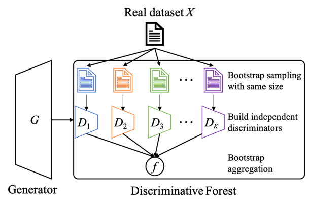 |
The Framework of Forest-GANDiscriminative Forest GAN (Forest-GAN) that consists of a number of discriminators built upon bootstrapping datasets. The predictive results of multiple discriminators are aggregated by an aggregation function. |
| 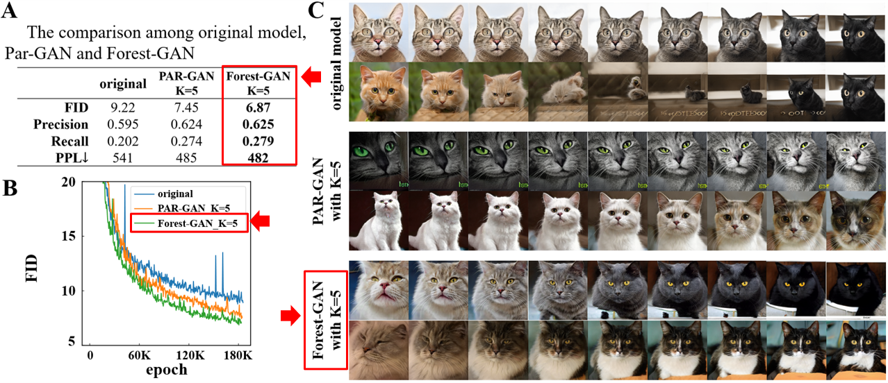 |
The Result of Forest-GANForest-GAN improves the generation performance. Forest-GAN further improves the performance to a new record FID of 6.87. The generator from Forest-GAN can generate more realistic images from intermediate style, while the base model fails to restore the intermediate mode. |
Enhancer Generation and Optimization for High Activity
Nov. 2022 -- Sep. 2023
| 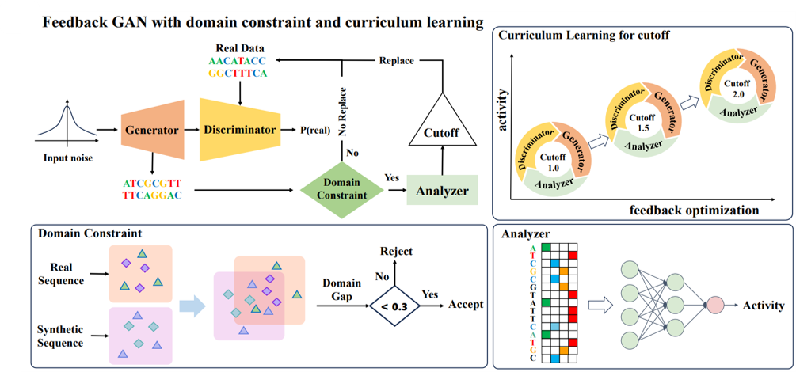 |
The Framework of Enhancer-GANEnhancer-GAN is based on the feedback-loop mechanism. It combines domain constraint and curriculum learning to alleviate the external noise and accelerate the optimization processing. The external analyzer is explored to make prediction for synthetic samples. |
| 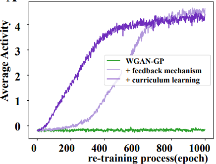 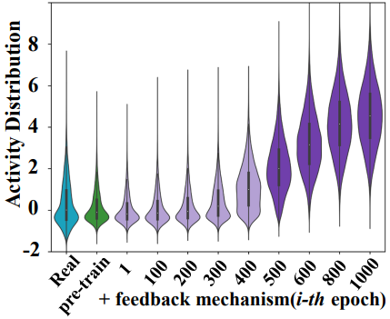 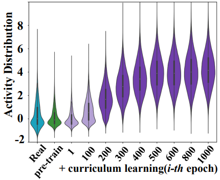 |
The Result-1 of Enhancer-GANThe activity distribution of generated sequences under three strategies in the optimization process. The base model makes little improvement for the activity of the generations, wihle the feedback mechanism significantly improves their activity and the curriculum learning accelerate the training convergence. |
| 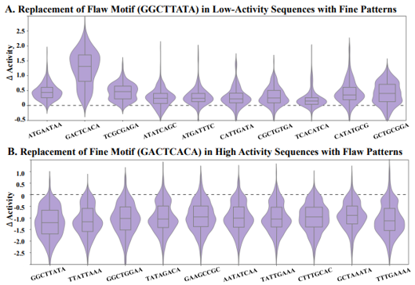 |
The Result-2 of Enhancer-GANThe activity changes caused by motif replacement among fine motifs and flaw motifs. (A) The activity of enhancers in low-activity is increased due to the replacement of the flaw motif (GGCTTATA) with 10 fine motifs. (B) The activity of enhancers in high-activity is decreased due to the replacement of fine motifs (GACTCACA) to 10 flaw motifs. |
Enhancer Identification based on the Language Model
Nov. 2021 -- Dec. 2022
| 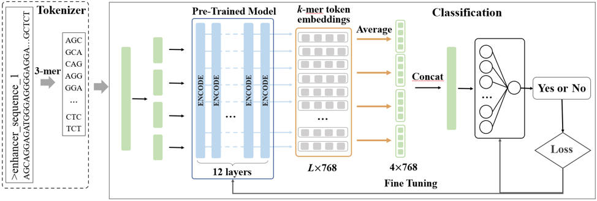 |
The Framework of iEnhancer-ELMWe explore the language model into the identification task. iEnhancer-ELM tokenizes DNA sequences with different scale k-mers and captures the contextual information of k-mers by incorporating pre-trained BERT-based enhancer language models. |
| 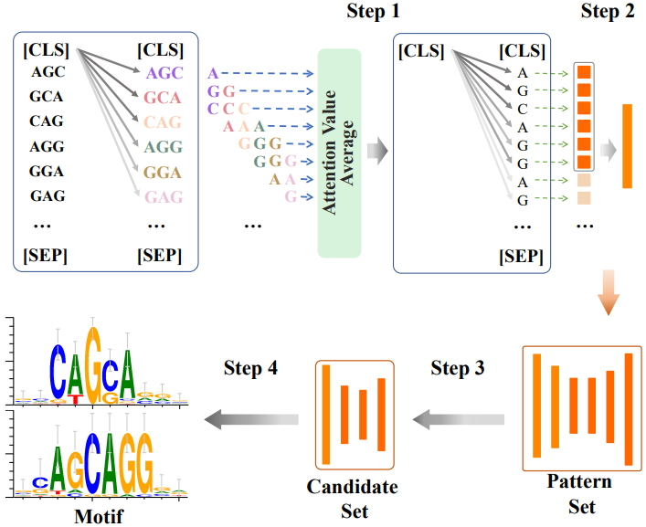 |
The Attention AnalysisWe analyze the captured biological patterns by enhancer language models via exploring the weights in attention mechanism. |
| 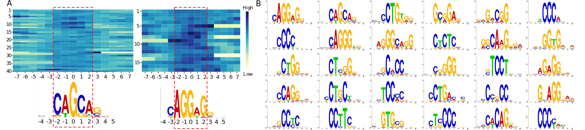 |
The Result of iEnhancer-ELMMotif discovery via attention mechanism in enhancer language models. (A) Motifs have high attention weights in corresponding regions. The highlighted regions are the motifs captured by attention mechanism. (B) 30 discovered motifs by the enhancer language model based on 3-mer on the Liu's dataset. |
Internship Experience
Molecular Optimization based on Building Blocks
May. 2023 - Aug. 2023
| 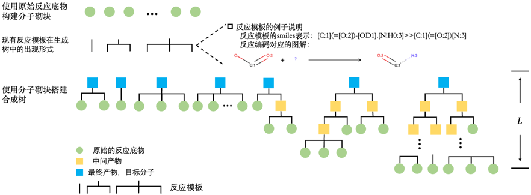 |
Molecular Optimization based on Building BlocksConstructing a generation tree based on purchasable moleculars and reaction templates, wherein the leaf nodes of the generation tree are selected from 180K existing building blocks, and the reaction templates form the branches of the tree, generating the root node from bottom to top. And then, utilize Genetic Algorithms to optimize the leaf nodes in order to generate products that satisfy desired properties. |
Academic Activities
Oral Presentation in BIBM-2023
December 8, 2023
|
I, the presenter, went to the main venue of BIBM-2023 to make an oral report and introduce my work of Enhancer Generation and Optimization for High Activity. |
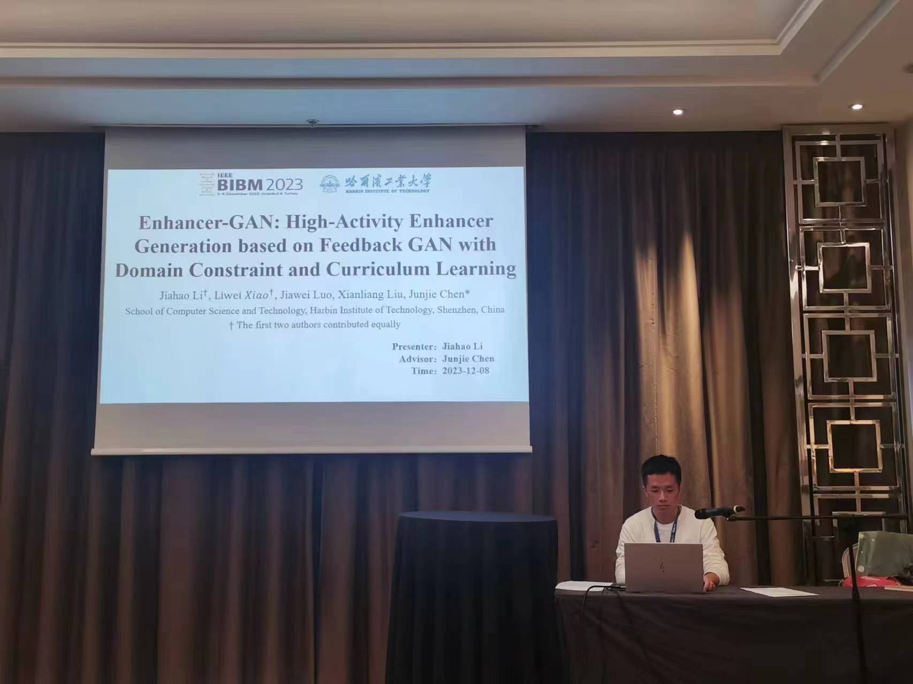 |
AAAI-2024 Pre-Talk Session
December 24, 2023
|
I participated in the Pre-Talk Session, hold by the Shenzhen Computer Federation. I am the presenter to introduce my work of Discriminator Forest for Improving Generative Diversity. |
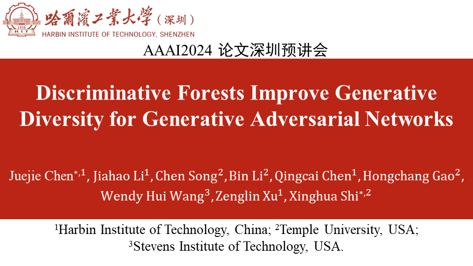 |
A Little More About Me
Alongside my academic interests, some of my other interests and hobbies are:
- Sports: Running, Basketball, Badminton and others
- Leisure Activities: Hiking, Reading